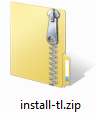
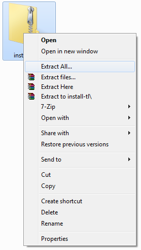
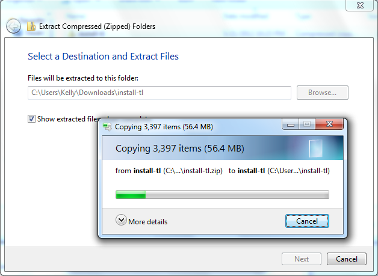
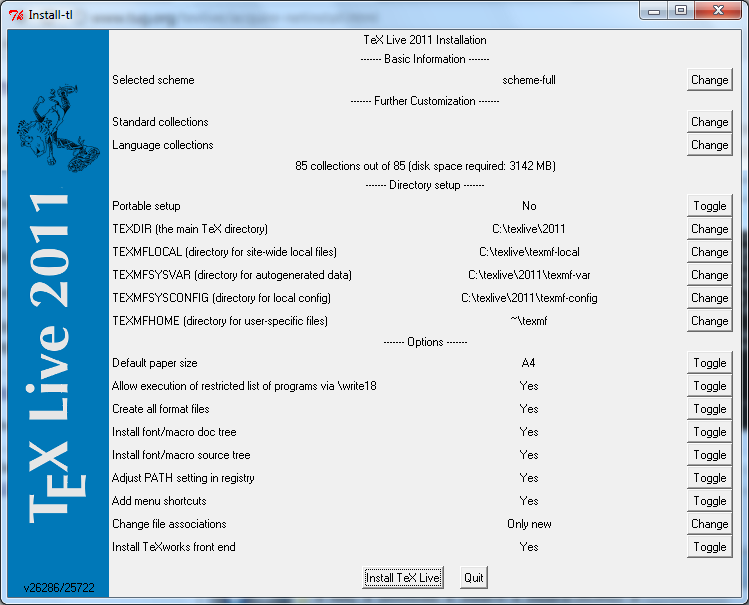
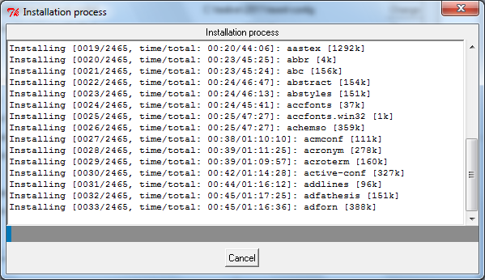
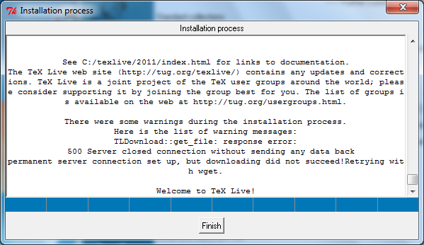

TeX Live is a LaTeX compiler. It allows one to turn LaTeX source code into PDF documents. Before one can make use of any LaTeX editor, they'll need to install TeX Live. The following are a list of steps that you can follow to accomplish this.
1) Download TeX Live's Zipped Installer
2) Extract TeX Live's Zipped Installer
Open up your downloads folder and locate install-tl.zip:

Right click on install-tl.zip and choose "Extract All...":

This may take a minute or two:

When finished, the extracted folder should look like this:

The installer we will use is the file install-tl-advanced.bat, seen as install-tl-advanced in this screenshot.
3) Run the TeX Live Installer
Double-click on install-tl-advanced.bat.
You should see the following:

Click on "Install TeX Live". You should then see:

This may take several minutes. When it's done, you'll see "Finish" button:

Click "Finish". TeX Live is now installed!
Next - Install a LaTeX Editor
Unless you want to use the command line, you'll want to install a LaTeX editor.